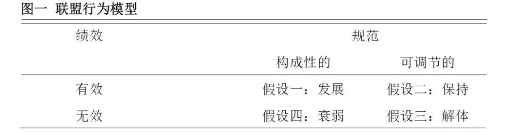

收录于合集 #《国际关系前沿》2021年第12期 22个

作品简介
作者： Kirsten Rafferty，贝里学院政府与国际研究学院助理教授。
编译： 闫一苇（国政学人编译员，重庆大学博雅学院）
来源： Rafferty, K. (2003). An Institutionalist Reinterpretation of Cold War Alliance Systems: Insights for Alliance Theory. Canadian Journal of Political Science, 36(2), 341-362. doi:10.1017/S0008423903778664.
归档： 《国际关系前沿》2021年第12期，总第39期。
内容摘要
这篇文章通过建立一个联盟维持与发展的模型来解释传统联盟理论在很大程度上所忽视的行为的两个方面。本文认为，面临军事与非军事利益共同威胁的国家更有可能将其军事协定制度化。即便在联盟运作不佳或战略背景发生根本性变化时，制度化进程也会对于退出联盟形成实质性与规范性的障碍。文章通过对两个冷战时期联盟体系——北大西洋公约组织（NATO）和东南亚条约组织（SEATO）进行比较分析，验证了该模型的几个假设。
文章导读
在冷战的大部分时间里，美国都通过一个复杂的军事联盟网络阻止苏联在其势力范围之外扩张，并在阻止失败时提供适当的防御。北大西洋公约组织是这一体系的核心，而美国也组成了其他联盟，如东南亚条约组织、中央条约组织（CENTO）和澳新美安全条约(ANZUS)，以捍卫领土与价值观。这些联盟的运作方式各不相同，其成功程度也有所不同。对于这些联盟的比较为联盟理论与实践提出了重要问题。特别是为什么一些联盟在它们产生的条件之外仍然能够维持，而其中的有些甚至会朝着新的方向发展？
01
联盟行为模型
传统上，现实主义学者对军事联盟的分析最感兴趣。古典现实主义者认为，为了与占据优势的国家或联盟抗衡，追求权力最大化的国家会加入联盟以聚集能力。然而，唯有在无法单方面抗衡或加入联盟之利远远大于弊时，这些国家才会这样做。国家加入联盟后的次要收益很少超过维持军事承诺的潜在成本，古典现实主义者认为国家应该解除联盟协议。
在思考联盟维持的问题时，现实主义者倾向于假设一个共同威胁的持续存在，或者至少是一个新威胁的可能性。例如，核大国之间的联盟往往是短暂的，而防御性联盟往往是持久的。然而，这些现实主义理论均无法充分解释联盟的长期持续性或其演变。
对于许多结构现实主义者来说，各国加入联盟不是为了权力最大化而是安全最大化。一篇解释联盟形成与解体的国内原因的文献也表明，国家心甘情愿地结盟以对抗威胁，但一旦威胁消退，它们便没有任何理由维持联盟。
传统上与现实主义联盟理论相关的可变的、基于能力的军事协定只是国家可以使用的几种联盟战略之一。当迫在眉睫的威胁出现时，若各国主要关注对其国家安全利益的威胁时，它们就会建立这样的联盟。在这种情况下，单边行动是有问题的，传统的军事联盟可能也不是最有效的工具。因此，各国建立了一个对抗军事威胁所必要的联盟并逐渐将其制度化，使联盟也能够应对非军事威胁。
联盟是国家在安全事务上履行正式与合同义务的 制度 ；国家可以选择建立一个正式的组织，以促进集体目标的实现。这种关系定义了盟国之间以及盟国与非盟国之间可以接受的互动范围。在本研究中，由于成员国创建一个使协商与合作的渠道正式化与规范化的组织，联盟逐渐制度化（一个长期的过程）。现实主义者对于国际联盟制度没有贡献太多解释性价值并认为这些制度只能反映特定国际体系内的权力关系。新自由主义制度主义者赋予联盟 制度 以因果意义，并特别关注对于安全制度的原因和后果的分析。这些说法往往强调联盟 制度 的形成、功能和作用，却没有评估制度化如何能在军事联盟存在时深刻地改变其性质。
本文认为，制度化对于联盟的维持有利，但同时也将作用于联盟的发展与衰落。然而制度化并不足以解释这样的行为。制度化的联盟是否能够维持、发展、衰落或解体是由两个相互作用的变量—— 绩效与构成性规范 决定的。与传统理论不同的是，本研究认为，政治和规范性的考虑会阻止国家退出联盟。另外，如果不考虑对于进入和退出联盟的成本收益分析与规范性约束，就无法正确理解联盟的行为。更具体地说，通过减少搜集信息和监管协议的交易成本以及提高盟国可获得信息的质量和范围，制度化可以 提高联盟的绩效 。而规范则被相对宽泛地理解为对行为的期望。当国家将 规范 作为目的，而不是促进实现其目的的实际手段时，这些规范便是 被构成的 。
当各国共享构成性的规范时，它们不仅是为了联盟所履行的职能，更是为了它所代表的内容。规范产生了一种对于联盟的“忠诚”，提高了退出联盟的成本与各国的参与度。图一描述了当规范促成对于联盟的这种承诺时，彻底和无法弥补的分裂将是国家最后的考虑。

**
**
假设一：
**
**
当一个制度化的联盟 有效运作 ，并且其盟国 共享构成性规范 时，联盟关系将逐渐 发展 出只与最初目标间接相关的新的目的和功能。
此时，虽然成员国身份基本保持不变，但联盟关系的形式开始改变，使其不那么像传统的军事协定。尤其是随着其他问题领域合作的加强，国家安全问题逐渐失去首要地位。在这种情况下，联盟就会不断发展。
假设二：
**
**
当一个制度化的联盟 有效运作 ，但其盟国 不共享构成性规范 时，联盟关系会 保持 下去，预计不会发生根本性的转变。
由于所获得的收益仍大于维持联盟的成本，各国没有任何退出联盟的动机。同时，它们也没有动力从根本上重组联盟。无论战略环境有无重大变革，这种情况均存在。
假设三：
**
**
当一个制度化的联盟 无效运作 ，并且其盟国也 不共享构成性规范 时，联盟关系就会 解体 。
在这种情况下，由于联盟没有实现盟国的目标，或者为了实现目标而付出了不能接受的代价，退出联盟的动机要大于假设二。
假设四：
**
**
当一个制度化的联盟 无效运作 ，但其盟国 共享构成性规范 时，通过缩小联盟活动范围或与其他机构合作的方式，其盟国将尝试扭转联盟的 衰落 。
从理论上来说，盟国可以在扩大和缩小联盟的范围之间做出选择。也就是说，它们可以为联盟创造新的功能或者是放弃那些最不成功的。
02
制度化联盟中的联盟行为比较
本文对于北约和东约进行了比较分析，对假设二与假设三（即联盟的维持和解体）进行评估。在相同的全球战略背景下，这两个案例表现出不同程度的制度化、绩效与规范。分析发现，制度化可以提高绩效，并增加退出联盟的实质性障碍。但这只有在特定的情况下才会发生：当盟国对于联盟的军事和政治目标的想法非常统一时。
案例一：北大西洋公约组织
**
**
本案例分析了北约的制度化，并为联盟制度化的过程提供了重要见解。首先，由于担心欧洲发生新的军事侵略行动，北美和欧洲国家建立了传统的军事联盟。同时，联盟的设计反映出它们对于这种“共同”威胁的不同认识。这些盟国并未在最初而是在军事行动明显与政治和经济决策相联系之后才将北约制度化。北约的制度化是一个缓慢的过程，但它产生出很多净效益，包括军事一体化、减少国防预算以及解决盟国间争端的机制。这一案例表明，当军事、政治与经济利益受到威胁时，盟国愿意牺牲一定程度的自治权以提高合作效率与联盟的可靠性和可信度，从而增强联盟的威慑力和防御价值。案例还表明，制度化为联盟提供了实质性与规范性的激励，以利用制度化的渠道（和话语权）来改善联盟的绩效与加强规范。因此，即使在威胁消退或联盟未能履行职责的情况下，盟国也没有退出，联盟继续存在。
案例二：东南亚条约组织
**
**
本案例探讨了东约的规范与功能性基础，以进一步评估制度化对联盟保持和解体的影响。东约盟国寻求一种类似于北约的制度化水平，以应对以军事入侵与政治颠覆为威胁的复杂战略环境。然而，由于盟国对于“共同”威胁本质的实际认知存在显著差异，东约只经历了一个有限的制度化过程。对于该联盟的一项评估表明，旨在最大化盟国话语权与阻止退出的制度化过程实际上削弱了联盟的绩效。每当东约未能应对严重危机，该组织便会进一步衰弱，而盟国也会采取其他手段来保证自己的安全。一旦可能的替代机构发展起来或该组织威胁到美国在这一地区更广泛的利益，就会发生盟国退出与联盟解体的现象。这一案例强调，成功的制度化要求盟友在威胁的看法上达成一致。同时表明，制度化不足以维持联盟，设计不良的机构无法为盟国退出设置实质性障碍。分析最后指出，制度性与规范性的论点不能取代传统联盟理论（传统联盟理论为联盟的形成和解体提供了强有力解释）；但相比传统理论，它们可以洞察更广泛的联盟行为（如联盟保持、发展与衰弱）。
03
结论
本文认为，一旦盟国将其联盟制度化，它们就不太可能随着环境或个体偏好的转变来解散联盟。联盟行为模型的假设二表明，只要联盟继续产生比现有替代品更具成本效益的净收益，或改用替代品的成本过高，联盟就会保持下去。换句话说，较高的净收益对于制度化联盟的保持是充分且必要的。
本文还认为，在缺乏令人满意的绩效和构成性规范的情况下，联盟将会解体。当联盟被认为运作无效和决定解散联盟之间几乎没有时间差时，假设三即被最大程度地证实。两者之间的时间差越大，对这一假设的支持力就越小。在可认知的联盟绩效非常低的情况下尤为如此。
总之，本文为军事联盟制度化进程的意义提供了依据。随着战略环境的转变，一个强大的联盟可以提高绩效或制造退出联盟的有力障碍。此结论对于未来的军事联盟，特别是北约来说非常重要。对于新联盟体系来说，北约可能并不总是一个合适的模式。除非在极其苛刻的条件下，不然它们很难复制北约的成功。由于提供了更有效地实现基本共同目标的机制，制度化只有在盟国紧密团结捍卫这一目标时才有效。然而，盟友的基本目标越多样化（以及不兼容），制度化就越有可能会暴露真正的弱点。因此，仅就有限军事目标达成统一的情况下，潜在的盟国应该避免联盟的制度化。最后，本文也对冷战后国际体系中北约的未来有所指涉。在新的国际体系中应该追求的目标上，北约盟国并没有完全统一。如果盟国间的这种分歧导致僵局或是造成了联盟和参与军事行动的特别决定的改革，它们将破坏北约的团结和绩效，并最终威胁其存在。
译者评述
联盟是以现实主义为代表的国际关系研究的重要问题。然而传统联盟理论多从国家本身趋利避害、追求安全等预设出发探讨联盟行为，对于联盟自身的演化过程及其及内部关系关注不够。
这篇文章通过两个变量建立了联盟运作四种状态的模型，在一定程度上对于传统理论有所补充。该模型还通过同一时期的两个案例来验证模型提出的两种联盟行为——保持与解体，分时间段地厘清了同一联盟在不同战略背景下可能的行为选择。这篇文章始终关注联盟的绩效与制度化两个变量，通过它们之间关系的不同组合提出了联盟的四种行为，并在本文中以实例检验，定性地说明面临共同威胁的国家可能会将他们的军事协定制度化，即便是在联盟运作不佳或战略背景发生根本性变化的情况下，这一制度化进程也会对于退出联盟形成实质性与规范性的障碍。文章将对于联盟行为的研究推进了一步。
作者特别关注制度化与联盟绩效间的关系，然而在国际关系议题复杂化、联盟概念扩大化的今天，制度化可能变得非必要且难以实现。作者提到对于冷战后北约行为的预判和考虑，而其判断仍是基于相对适用于冷战时期的模型的。另外，联盟制度化与绩效作为联盟行为的两个重要变量，并非排他与仅有的。对于联盟行为模型的建构或许应该纳入更多变量，对于如今发展出的不同性质与议题下的的联盟也应给予更多关注与讨论。
词汇整理
东南亚条约组织
SEATO (Southeast AsiaTreaty Organization)
**制度化规范 constitutive norms **
联盟解体 alliance dissolution
发言权 voice
责编 | 王芷汀 杨沛鑫
排版 | 牛子悦 云琪布日
文章观点不代表本平台观点，本平台评译分享的文章均出于专业学习之用, 不以任何盈利为目的，内容主要呈现对原文的介绍，原文内容请通过各高校购买的数据库自行下载。